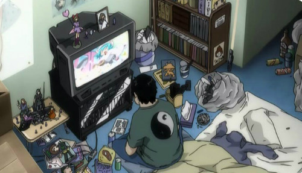
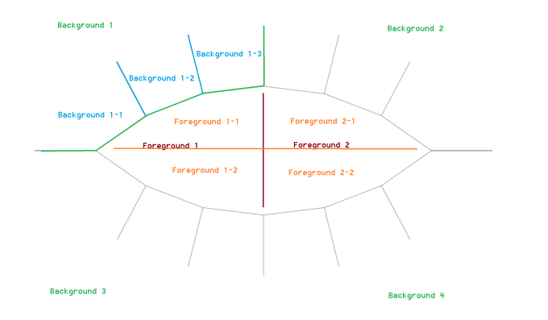

The Metalink Protocol

@@@@@@@@@@@@@@@@@@@@@@@@@@@@@@@@@@@@@@@@@@
@ The Metalink Protocol @
@ Musings on a Roadmap for the Metaverse @
@ by: RenownedPsychohistorian (2016) @
@ @
@@@@@@@@@@@@@@@@@@@@@@@@@@@@@@@@@@@@@@@@@@
It is readily apparent to even the most casual of observers that there is a strange transformation occurring in our world. Sometime in the not-so-distant past, we noticed that the unseen world of cyberspace mattered more to society and the physical world than the meatspace once did. Before, nuclear weapons were the world’s greatest fear- now, their potential impact pales in comparison with the damage which a large-scale hack could do. In response, ever greater effort must be put into securing against this eventuality. The weapons get stronger, the walls get thicker, more intelligence is gathered, and we find ourselves in an arms race of coding, racing to the ultimate defense (a benevolent strong AI), and the ultimate offense, (a malevolent strong AI).
Our constant need for bickering and insistence on the creation of advantage in order to progress has contributed to the creation of a social economy to stand in for the monetary economy in which the majority cannot fully participate. Wallowing in our collective misery, angst, and fear, we have largely offloaded the processes of psychotherapy and entertainment to cyberspatial entities. By doing this, we have created a market for novelty, delivered in quick shots of dopamine, and we have wired ourselves into it with a number of biofeedback systems. This may not be immediately clear, but all you need to do to get the gist is look at the structure of novelty sites like Youtube, Reddit, Facebook, and Twitter:
- Allow for rapid creation of content (constant stream of alternatives)
- Allow for positive and negative feedback (likes, disikes, arguments, praise, etc)
- Tie physical and psychological rewards to positive feedback (x subscribers = fame and fortune)
- Utilize the feedback to enforce standards, affecting the rewards above (bans, deletion, controversy)
There exist many examples of how the seemingly worthless and meaningless likes and upvotes we dole out by the thousands each week have had very real consequences reflected in the physical world- people have been driven to suicide, rescued from homelessness, dragged into fame, carried out revolutions (Arab Spring), challenged the Establishment (Trump/Brexit), and changed the world (Wikileaks). Instead of relying on regular “psychic meals” of happiness interspersed with periods of neutrality and sadness, as has been the wont of humanity for the greater part of modern history, we have opted for what amounts to a dopamine IV with a digital needle, a predictable stream of uppers to help us ignore the crumbling facade of society.
The amount of the meatspace people living today will experience is miniscule compared to the amount experienced in prior generations. We have already seen the rise of basement-dwellers/shut-ins/hikkikomori/NEETs throughout the connected world, and their number appears to be growing. Failed by a system not designed to accommodate them, many have retreated to a world which they understand, and in which they can thrive. Within the context of the social economy, they create psychological structures designed to mimic fantasy- forming elaborate collectives of social and meta-social networks within which they can operate at an optimal level. Dissatisfied with the heroes, values, and activities of the “real world,” the hikkikomori seeks out new heroes, values, and activities- the fact that they have few responsibilities allows them more time to find those things that resonate best with them. Entirely unconsciously, the hikkikomori have become masters of cyberspatial bricolage, crafting spectacular conceptions of reality which rival the greatest creative works known to humankind.
I have personally spoken with college freshmen whose intellects exceed those of even the least incompetent professors of philosophy. In the years spent contemplating and curating their inner life, they have become unwitting monastics, bound by economic and social pressure in ever-increasing numbers to the ancient codes of poverty, chastity, and stability. When a newcomer passes the trials of initiation, they are rewarded with an outpouring of content, myth, and cant that encourages further engagement and creative contribution. The horizontal mobility in this space is unmatched, the potential for engagement is unlimited, and the avenues of exploration are limitless- growing at a pace far, far in advance of our ability to examine it. Currently these webs of experiences, conversations, arguments, philosophies, friendships, ethics, and entertainments are stored within the internet, but the locations lie largely within the minds of their creators, scattered across terabytes of folders and hundreds of far-flung websites. The next logical step is to provide a service for consolidating and codifying these links, but therein lies a key structural problem.
The big leap that powered the internet revolution was the hyperlink- the ability to create roads between words. The problem is that hyperlinks only operate in one direction. Clicking a link discards the previous window of information and moves the focus to a single new page- going back or comparing requires the usage of a back button or largely ineffective systems like linear history or bookmarking, unless the user is utilizing a multi-pane browser or multiple screens, which is often unintuitive. Utilizing hyperlinks to map the “metastructural monastery of the mind” which is tended by a given user makes little sense, as in many cases the map of the work within the user’s mind often relies on n-directional links- having a video playing rain sounds in the background while watching Netflix on one monitor and reading poetry on the other, for instance. To express this as a set of hyperlinks requires far more effort than should be required (3 links, 3 clicks), which is not “psychoergonomic-” requiring a break in the browsing flow to set up. Relying on this one-directional organizational structure, especially with the oncoming advent of virtual and augmented reality, is misguided. This is why the big leap in the alternet revolution will be the metalink- the ability to create roads between contexts.
A metalink would consist of a hash of contexts and keys, for example:
Context1 = {audio: youtube rain sounds, foreground 1: Netflix, foreground 2: poetry}
When clicked, this link would open the desired “datastreams” in the defined contexts.
The basic layout of a metalink browser would look like this, rendered in a VR/AR space:

...with added support for multiple audio and mic channels. Since the metalink is a hash, the keys can also be metalinks, like:
Context2 = {audio: conference call, foreground 1: Context1, foreground 2: spreadsheet}
When accessing Context1 as part of Context2, Context1 is treated as a second-order stream, and rendered accordingly, such that context dependencies are ordered from first-encountered to last-encountered. Context2 would be expanded and rendered as follows:
{audio 1: conference call, audio 2: rain sounds, foreground 1-1: Netflix,
foreground 1-2: poetry, foreground 2: spreadsheet}
Once the level of nesting exceeds the second order of depth, i.e.:
Context3= {audio: podcast, foreground 1: Context2, foreground 2: Twitch livestream},
then existing datastreams are pushed to the background panes, and audio levels are automatically reduced to compensate, based on their priority within the currently rendered context. Once the background panes are filled, they then fill inwards in either a quadrant-based (see TeamLab's Nirvana) or hex-based tessellation. Users can grab and move streams between panes, updating their session hash accordingly, and can share their session hash, or a subset of their session hash, as a metalink, allowing other users to interact seamlessly with large-scale datastream constructs.
(N.B. the physical components required for this are discussed at some length in "The Metagame Paradox.". Readers interested in the software requirements for such a system should peruse "The Sensory Indulgence Tank").
With such a protocol in place, it would become very easy for users to engage with the complex ideas and thoughtforms of their peers, allowing the hikkikomori to share their body of work with the masses, and re-engaging them as productive members of society, capable of mass-scale collaboration and the integration of diverse input into cogent and meaningful output.
By connecting the marketplace of ideas with the marketplace of creatives and consumers with a low-latency link between thought and actionable data, “just browsing the internet” becomes a productive activity- the thinkers think, the creatives interpret, the users integrate, and the progress of knowledge is vastly accelerated. Rather than focusing on ensuring the quality of content, this paradigm shift focuses on focus on the facilitation of growth along an optimal vector, optimizing the quantity and accessibility of content for users to integrate into their bricolage. Instead of wasting this processing power on repetitive tasks through the mechanical turk model, with an interface like that described above could be used to facilitate a "creative turk," similar to Mancom's "entity crushing" department in Zero Theorem.
Consider: Da Vinci was able to create staggering artworks and revolutionize thought with paper, color, and his own mind. Imagine what he could have done with the raw experiential input of the human race provided in an interactive, mutable fashion!
Perhaps most importantly, the metalink protocol is fully backwards-compatible with the hypertext protocol, as every hyperlink can be expressed as a metalink of
{foreground 1: http://}
As the number of users browsing using the metalink protocol increases, the most useful links will be rapidly added to metalink structures, which will be organized into metalink constructs (i.e. dashboards, or complete contexts, the next step in the evolution of the web page) and integrated into metalink services (i.e. metalink aggregators, the next step in the evolution of social media networks), providing a second means of access to the internet as it is today without requiring existing services to make any changes to ensure compatibility.
At its core, the metalink protocol is essentially a system for rendering and managing massive collections of hyperlinks, but adding additional protocols to handle those links is as simple as adding a wrapper to a metalink, like so:
{output: blackandwhitefilter.com/#{Context}},
which would send the entire current context to a service which would run it through a black and white filter and re-render it.
This approach allows the metaverse to grow out of the seed of the internet naturally, without requiring users to upgrade to maintain their current level of access. As VR/AR technology becomes cheaper, demand for access to metabrowsing capabilities will increase, driving a research trend towards psychoergonomics, which has as its goal the reduction of latency between projection (reflection of perception) and integration (psychological reconciliation of the propositions suggested by the perception with the projecting node's "firmware" «i.e. perceptions»).
The fewer cycles that are spent converting input into usable data, (i.e.
[x means a and means b, therefore c] => CREATE RULE {x:c}
the faster users can iteratively polish away the suboptimal edges standing between them and "the zone."
The key is to optimize datastream input for cognition /as it is now/, not to optimize for cognition /as it ought to be/. Optimizing input methods to at or behind the bleeding edge ensures maximum adoption and minimizes cycles wasted on retraining.
With no barrier to workability (i.e. setting up tabs, losing track of sites, browser crashes, two-pane view limits), users have naturally more bandwidth each day to "innovent." Innovention simultaneously polishes the rough edges that develop in limited memeplexes (i.e. interactions between contexts encountered regularly in a small community, like needing a voicechat client, an overlay, and a game window open to participate in an MMO raid) and directs growth in the macroplex (by way of codifying the supply/demand curve at work behind a particular bundle of services). Under these conditions, the intellectual marketplace will trend toward productivity and self-regulation as psychoergonomic progresses, as advances in the domain create a self-reinforcing (benign, even healthy) cycle of addiction. As long as you can pass the economic gravity well of the supply/demand curve (which is to say that you can afford the equipment necessary to interact with the metaverse), the addiction cycle will essentially optimize supply and demand, which in turn will simplify markets, and free up more intellectual bandwidth.
It is perhaps easiest to think of the metaverse as a sort of game, analagous in many ways to an MMO. However, rather than patching the metaverse to enforce a particular method of play (i.e. establishing and enforcing particular usage methods), the game should be patched to expand the number of possible means of play. The greater the speed at which novelty is introduced, the greater the speed at which innovation is produced. Exacerbating the conflict by defining finite laws over which division occurs not only wastes work, it is a futile endeavor, as not all of the people can be pleased all of the time. It is far more efficient to design a robust "interaction engine" and inject as many interactive elements as possible than injecting select elements and defining them in relation to all other interactive elements. The former results in the same number of interactions as the latter, or
x*(interactive elements = e)
which is expanded by the existing interactions between the
set of all e = [E]
which is equivalent to
e!
Any patch results in
xe+e!
interactions being generated. The key is that under a managed process, this requires some nonzero number of
maintenance interactions = m, such that 0<m<=xe+e!
When injected into an interaction engine, however, m = 0, and because of this, facilitated injection (i.e. maximum interactivity) will always be more efficient than managed injection (maximally-defined interactivity).
By focusing on the design of the underlying structures and systems to constantly reinforce play "as it is at time = t" vs. "as it ought to be at t+n," the burden of work is shifted from the developer to the body of users, responding to their natural exploratory efforts rather than to their reactions to enforced change. The resulting dynamic is one where the user is part of the game's development, with little to no possibility of developing a cogent metagame sufficiently virulent to compete with the game on an extended basis. Instead of meta shifts occurring over months, they would occur constantly, but due to their rapid fluctuation, no one meta would dominate for long, and the gameplay focus would switch from applied metagaming (i.e. defensive consolidation to secure a position) to innovative metagaming (i.e. innovention based on extant competing interactions in order to gain a personal advantage).
In short, to step back from the metaphor, allowing users to customize and share their interface as intuitively as possible is far more important than defining an interface. Content is naturally winnowed and curated through interaction/engagement. this is already an incredibly fast process (i.e. like and dislike), so rather than enforcing curational standards, deference to actual usage is to be prioritized. Humans are very good at feeling and doing, but they are terrible at prediction. By extension, modern users are extremely good at finding workarounds and solving technical challenges through individual and group efforts, and it is reasonable to assume that this behavior would carry over into the future.
Given the sudden rapid increase in the availability of information which a metalink protocol would provide, it is even more reasonable to assume that this behavior would be significantly enhanced. By paying attention to usage patterns, interested developers and thinkers can easily create enhancements to the protocol to meet the changing needs of users, opening up a path towards the optimal processing of information by the human mind. As things currently stand, the vast majority of the information on the internet is latent knowledge, rather than tacit/explicit knowledge, and it requires an atypical interface to access, shape, and interact with. This should ideally be corrected insofar as possible through the continuous integration of useful customizations into the chain of metalinks which would theoretically comprise the metaverse- luckily, due to the underlying structure of the metalink protocol, this is an entirely naturally occurring process, which scales infinitely and is well-adapted to parallel computational optimization.
To conclude, it would appear possible, using existing technology, to create a means for interacting with huge amounts of data in a natural fashion. Once created, this utility would facilitate a massive acceleration in the ability of the human mind to interact with the universe of information, leading to staggering advances as a species in the areas of entertainment, study, communication, and productivity, at an exceedingly low cost. Owing to this, it is imperative that such a utility be developed so that the benefits of a psychoergonomic interactive metaverse can be reaped as soon as possible.